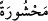
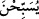
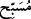
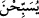

) kelimesinin (
)’in çoğulu olması gibi. (
): Havada uçan kanatlılara denir. (
), (
)’ın hâlidir. Âmil ise (
) fiilidir. Mânâ şöyledir: Kuşları da her yön ve
yandan kendisine gelip toplanmış vaziyette ona âmâde kıldık. Diğer bir ifâdeyle, onun
yanında toplanmış ve başı üzerinde saf olmuşlardı.
Keşfü’l-esrâr’da belirtildiğine göre, melekler Dâvûd’un başına kendisini
koruyabileceği miktarda kuş toplarlarmış.
İbn Abbas’tan (r.a.) rivâyet edilir ki: Dâvûd (a.s.) tesbih ettiğinde dağlar da tesbih
ederek kendisine cevap verirler; bunun üzerine kuşlar da onun yanında bir araya gelerek
tesbih etmeye başlarlarmış ki âyetteki toplanmanın (haşr) anlamı da budur. Âyette (
) fiili değil de (
) ismi kullanılmak sûretiyle dağların hâli (
) ile kuşların hâli
arasında bir mutabakat gözetilmemiştir. Çünkü hepsinin birden toplanmış olması, olayı,
tedrîcî olarak yavaş yavaş toplanma anlamından -ki muzârî fiil kullanıldığında bu mânâ
anlaşılır- daha iyi anlatmaktadır.
Bütün bu dağlar ve kuşlardan herbiri Dâvûd’dan (a.s.) dolayı yâni o tesbih ettiği için,
-bu yoruma göre hazfedilmiş bir muzaf olduğu düşünülmüş olur- tesbihe katılırlardı. O
tesbih ettiği zaman onunla beraber dağlar ve kuşlar da tesbih etmeğe başlardı. Diğer bir
ifâdeyle onunla beraber tesbih için ağızlarını açmışlardı. Tesbih eden (
) yerine
dönen ve yönelen anlamındaki (
) fiilinin kullanılması, yönelmenin de nihâyet tesbihe
dönmek anlamında olmasındandır. Tesbihe dönen de bu fiiline tekrar tekrar döndüğü
için (
), (
) olarak isimlendirilmiştir. Bununla biraz önceki (
) arasındaki fark
şudur: (
) “tesbih ederler” ifâdesi tesbihe muvafakat ettiklerini gösterirken, (
) bu
muvafakatın dâimî olduğu anlamına gelir.
( )’daki zamirin Allah’a râci olduğu da söylenmektedir ki o zaman mânâ şu şekilde
olur: Dâvûd (a.s.), dağlar ve kuşlardan herbiri O’na yönelir; O’nu tekrar tekrar tesbih
ederler, nağme ederler şeklinde olur.
Rivâyet edilir ki, Allah Teâlâ Dâvûd’a verdiği güzel sesi yarattıklarından hiçbirine
vermemiş olduğu için Dâvûd’un nağmeleri dağlara ulaşınca, dağlar bu sesi işitmenin
zevkinden onun zikr ve tesbihine katılırlarmış. Bu nağmeleri duyduğunda kuşlar da
tesbih ve takdis ifâde eden nağmelerle şakıyıp ötmeğe başlarlarmış. Vahşî hayvanlar da
Dâvûd’un sesini işitip boyunlarından tutulacak kadar ona yaklaşırlarmış. Hâsılı, tüm
varlıklar istidâdları ölçüsünde ma’rifet ve hal akışını (feyezan) kabule elverişlidirler.
Bülbül, hüdhüd, kumru, güvercin vb. kuşlar gözlerimizin önünde değil mi?
Ne dedi, bilir misin bana seher bülbülü?
Nasıl birisin ki sen, bîhabersin sevgiden!
Arab’ın şiiriyle deve bile bir hâl ve neşe içine giriyor,
Eğer sende zevk yoksa bozuk tabîatlı bir hayvansın.